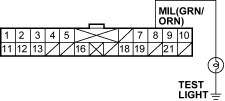

No Malfunction Indicator Lamp (MIL)
- Check the ''On Board Diagnostic (OBD) System Check''.
Was the OBD System Check performed?
YES – Go to step 2.
NO – Go to OBD System Check. 
- Check for the following conditions:
- The meter fuse
- The ignition feed fuse
Is the fuse OK?
YES – Go to step 3.
NO – Replace the fuse.
- Turn the ignition switch OFF.
- Disconnect ECM A connector.
- Connect the ECM A connector terminal No. 15 and body ground with a jumper wire.

- Turn the ignition switch ON (II).
Is the MIL turn ON?
YES – Substitute a known-good ECM and recheck. If symptom/indication goes away, replace the original ECM.
NO – Go to step 7.
- Turn the ignition switch OFF.
- Disconnect meter connector.
- Check for an open in the wire between the ECM A connector terminal No. 15 and meter connector terminal No. 18.
Is a problem found?
YES – Repair an open in the wire.
NO – Go to step 10.
- Connect the meter connector terminal No. 8 and body ground with a test light.
METER CONNECTOR 22P CONNECTOR

Wire side of female terminals
- Turn the ignition switch ON (II).
Is the test light turn ON?
YES – Go to step 12.
NO – Repair an open in the instrument cluster ignition feed circuit.